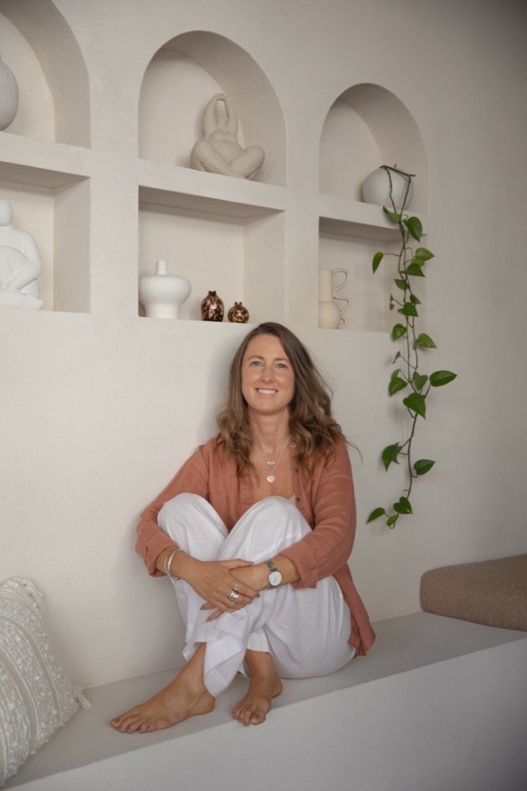

For more than 20 years, I worked in corporate. Event management, operations, administration. I was the person who made sure everything ran on time, every detail was covered and everyone else could do their job.
I started working in events in my early 20s, and I loved the energy of it. But events are high-pressure by nature: tight deadlines, last-minute changes, long days on your feet and the constant demand to make it all look effortless. Over the years the roles got bigger, and so did the pressure.
And for a long time, I was good at it. Until I wasn't.
Running on empty
My last big corporate role before everything changed was in national operations. The hours were long, the pressure didn't let up, and somewhere along the way I lost my motivation for the work. I kept showing up, but I was running on empty.
Looking back, it was burnout. At the time, I just thought that was what a demanding job felt like.

The spark
Funnily enough, the idea for what I do now came from that same job. We had wellbeing speakers on our books for events, and I'd watch them present to rooms full of corporate teams. I remember thinking: I would love to do that one day.
I'd been practising yoga for stress since I was 22. It had helped me through so much, and I wanted to share it properly. So I made the leap. I left to train in yoga and meditation, and completed my Yoga Teacher Training in 2019.
It wasn't a straight line
I'd love to tell you I walked out of corporate and never looked back. That isn't what happened.
I fell back into corporate work, first at Remedy Kombucha and later as an HR consultant. But this time was different. During COVID, I found myself leading our wellbeing crew, helping a team look after each other through one of the hardest periods many of us had ever worked through. Without quite realising it, I was already doing the work I'd dreamed about.
Those years taught me that the two worlds don't have to be separate. I understand the pressure of deadlines, budgets and back-to-back meetings because I've lived it. That's exactly why I can help.
What I wish I'd known
- Health is wealth. There is more to life than a job. No role is worth your health.
- Fill your own cup first. You need to nourish yourself physically, emotionally and energetically before you can truly give to others.
- Boundaries aren't selfish. They're what stop burnout before it starts.
Where I am now
Today I teach at least 15 classes a week, including weekends. It's still a full schedule, but it feels completely different. I'm happier. I have space and flexibility, and I get to create my own events and experiences.
And I'm back in corporate spaces, just in a very different role. Instead of being the one running on empty, I'm the one helping teams look after their nervous systems, sharing the tools that have supported me for over 20 years.
What I love most is that nothing was wasted. Today I get to combine everything I've learned: two decades of events experience with my training in yoga, meditation, breathwork, reiki and sound. Planning a corporate wellbeing day or a workshop draws on both sides of who I am.
And the biggest change of all? I now run my own retreats. Bringing people together to slow down, reconnect and come home to themselves, in beautiful places, with every detail looked after. It's the perfect blend of the event planner I've always been and the facilitator I've become. Honestly, it's a dream come true.
If you're reading this from your desk, tired and wondering if it's meant to feel this hard: it isn't. Start small. One breath. One boundary. One evening that's just for you.
Health is wealth. Your cup matters too.